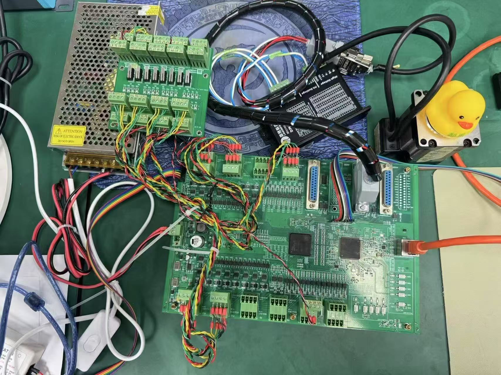

潘德念
嵌入式软件工程师
项目经历
四轴运动控制板
2023年10月 - 至今

该项目主要是开发四轴电机运动控制板卡，应用于物料筛选机、多轴机械臂等设备。板卡上有FPGA与STM32，我主要是负责STM32端的嵌入式软件开发。
- 关键技术点1：FreeRTOS+Lwip通过移植操作系统到F407单片机上进行任务调度与以太网通讯
- 关键技术点2：使用FSMC总线，通过共享RAM的方式将以太网下发的指令经过STM32处理后存放到指定地址,并且读取FPGA存放的反馈数据进行以太网上传
- 关键技术点3：使用基于Spi总线的Flash对以太网下发的多条指令数据进行存放，然后进行脱机指令的运行
基于CAN总线的一体化闭环步进电机驱动器（毕业设计）
2025年4月 - 至今

开发一款通过CAN总线发送运动指令进行控制的闭环步进电机驱动器，该项目的硬件与软件都是独立完成。
- 关键技术点1：不丢步算法：通过磁编码器与对其角度变化的记录与理论角度变化的对比，进行丢步补偿
- 关键技术点2：堵转监测：监测在发送脉冲时角度是否为发送变化，判断是否丢步，控制电流的输出
- 关键技术点3：梯形加减速算法：实时计算加速与减速的步数，通过改变脉冲频率，实现梯形加减速
运动目标控制与自动追踪系统
2023年8月1日 - 2023年8月4日

开发运动目标控制与自动追踪系统两套独立系统，包括红色光斑运动系统和绿色追踪系统。
- 关键技术点1：STM32F1单片机控制舵机云台将激光打到指定靶纸坐标的控制程序开发
- 关键技术点2：摄像头返回坐标点解算成角度通过PID控制PWM占空比控制舵机云台
- 关键技术点3：OPENMV摄像头识别边框坐标、红色光斑的算法开发